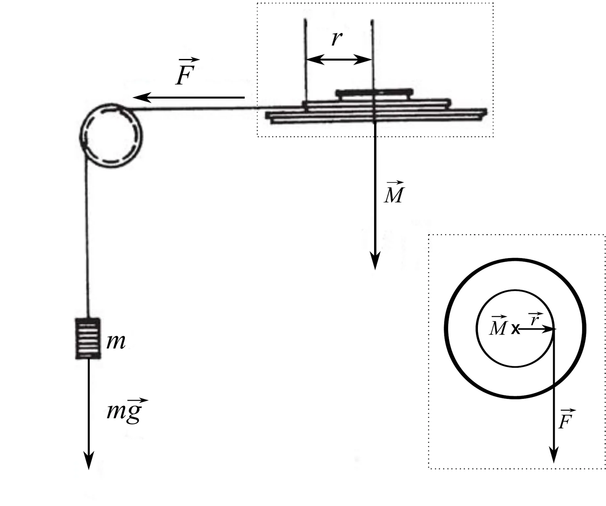
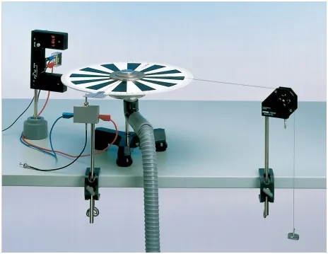

A diferencia de las prácticas “Momento y Momento Angular I y II” donde se han obtenido las magnitudes características del movimiento utilizando una fuerza constante en todo el proceso, en esta práctica, el objetivo es establecer la relación que existe entre la aceleración angular y el momento del peso, que es responsable de que el disco rote.
Fundamento teórico
La relación entre el momento angular L de un cuerpo rígido en un sistema de coordenadas fijo con su origen en el centro de gravedad, y el momento M o torque τ que actúa sobre él viene dada por:
M=dtdL(1)
El momento angular está relacionado con la velocidad angular ω y el momento de inercia I^ mediante:
L=I^ω(2)
En el presente caso, ω tiene la dirección de un eje principal de inercia (eje z), de modo que L tiene una sola componente
Lz=Izω(3)
donde Iz es la componente z del momento de inercia principal de la placa.
En el caso que vamos a estudiar si sustituimos la ecuación 3 en la ecuación 1 obtenemos:
Mz=Izdtdω(4)
El momento de la fuerza F respecto de un punto viene dada por la fórmula:
M=r×F(5)
donde r es el vector que tiene como origen el punto respecto al cual queremos calcular el momento de la fuerza y como extremo final el punto de aplicación de dicha fuerza. En el caso que estamos estudiando nos quedaría un esquema tal y como se muestra en la figura 1. Teniendo en cuenta que estos vectores son perpendiculares la fórmula (5) se transforma en:

Figura 1: Momento del peso sobre el plato giratorio. (En el recuadro de la derecha se ha dibujado la vista alzada del montaje, de modo que se puedan apreciar las diferentes magnitudes vectoriales que intervienen).
Mz=rmg,(6)
Teniendo en cuenta todo esto la ecuación de movimiento queda de la siguiente forma:
mgr=Izdtdω=Izα(7)
o, despejando:
α=Izmgr.(8)
Si ahora tenemos en cuenta la condición inicial ω(0)=0 se obtiene
ω(t)=Izmgrt(9)
Procediendo de modo análogo para el ángulo de rotación ϕ y teniendo en cuenta su condición inicial correspondiente, ϕ(0)=0, obtenemos:
ϕ(t)=21Izmgrt2(10)
Montaje experimental

Figura 2: Montaje experimental
El montaje experimental se ha dispuesto como se muestra en la figura 2. El ángulo a medir vendrá determinado por la posición de la puerta fotoelélectrica y el centro la pantalla situada en el extremo del disco. La polea de precisión se colocará de modo que el hilo quede suspendido horizontalmente sobre la placa y esté alineado con la propia polea. Para reducir al mínimo el rozamiento en el movimiento de la placa giratoria, en uno de los montajes la placa se dispone sobre un cojín de aire cuya bomba se debe mantener al máximo, mientras que en el otro, el eje de rotación posee un sistema de rodamientos que permite despreciar el rozamiento.
Una vez realizado el montaje procederemos a la toma de medidas. Para ello mediremos con la ayuda de un cronómetro el tiempo t que tarda la pantalla situada en el extremo del disco en recorrer el ángulo hasta la puerta fotoeléctrica, así como el tiempo Δt que le cuesta atravesarla y que nos lo proporcionará la propia puerta fotoeléctrica. Con estos tiempos y conociendo el ángulo Δϕ correspondiente a dicha pantalla llegamos a la siguiente relación:
ω=ΔtΔϕ(11)
En nuestro caso, las especificaciones dadas por el fabricante nos dicen que Δϕ tiene un valor de 0,262 radianes con lo que podemos concluir:
ω(t+2Δt)=ΔtΔϕ=Δt0.262(12)
Para obtener el valor de la aceleración angular α, haremos uso del hecho de que el momento generado por cada peso es constante, y por lo tanto el movimiento del disco es un movimiento de rotación con aceleración constante. Esto nos va a permitir deducir el valor de α, simplemente considerando que ω=αt′ y la ecuación 11:
α=tω=Δt⋅t′Δϕ(13)
Resultados
Medir el radio r del disco acanalado situado encima del plato giratorio al que se ha enrrollado el hilo del que cuelga la masa m. (el alumno dispone de 3 opciones diferentes):
r(±ϵr)=
Para un ángulo fijo ϕ medir tres veces el tiempo t que tarda el plato giratorio en recorrerlo y el tiempo Δt que tarda la placa de apertura en cruzar el detector. Haciendo uso de la ecuación 13 obtenga el valor de la acelearación angular α. A continuación, se irá aumentando la masa sobre el gancho que cuelga de la polea de precisión de 1g en 1g y se repetirá el proceso de medición para 8 valores diferentes de masa. Verificaremos la masa del portapesas.
masaportapesas(±ϵmasaportapesas)=
Importante: asegurarse de que el hilo permanece dentro del canal de la polea a lo largo de todo el movimiento. Si el hilo se sale de la acanaladura, deberá repetirse el lanzamiento.
ϕ(±ϵϕ)=
m(±ϵm)
Mz(±ϵMz)
t1,2,3(±ϵti)
t
±ϵt
Δt1,2,3(±ϵΔti)
Δt
±ϵΔt
t+Δt/2
±ϵt+Δt/2
α
±ϵα
Representar gráficamente α en función de momento de fuerza Mz. Calcular la pendiente a, la ordenada en el origen b y el coeficiente de correlación lineal r3 de la recta de mı́nimos cuadrados α=aMz+b, y trazar esta recta sobre la representación anterior.
a(±ϵa)=b(±ϵb)=r=
Haciendo uso de los resultados obtenidos y comparando con la ecuación 1.8, determine el momento de inercia del plato giratorio.